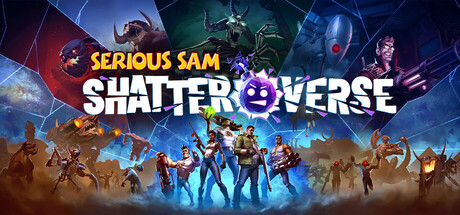

🔥🔥
《英雄萨姆：破碎宇宙》（Serious Sam: Shatterverse）计划今日发售
Behaviour + Devolver；Steam / PS5 / Xbox Series。截稿 Steam 仍 coming_soon、无用户评测。
- 日期
- 计划 2026-08-31
- 库
- 游戏行业观察
- 状态
- Steam 简中名已核 · 尚未解锁
今日无新旗舰。今日无新 MCP/Skill 推荐。主线是《英雄萨姆：破碎宇宙》计划今日三端发售（截稿 Steam 尚未解锁），以及原神「菲林斯」·侧记预热 9/1 复刻。
不复述已报：OpenAI×Cursor 切断、PS5 Pro 零售、巫师3 SoP、ZZZ 3.2 前瞻、伊涅芙近闻、Codex 0.151.0。AI 与游戏开发窗内无一线达门槛 Signal，空库未出 Tab。
跨库最高 Attention 落在《英雄萨姆：破碎宇宙》计划今日发售；二次元是原神复刻侧记，没有新池开门。
观察清单：Grok 4.7 未锁；Disc to Digital Insiders 8/31 未核 go-live；终末地 9/2；TGS 9/17–9/21。
Behaviour + Devolver；Steam / PS5 / Xbox Series。截稿 Steam 仍 coming_soon、无用户评测。
米游社 8/30 12:00 官方侧记，点名 9/1 18:00「孤灯夜访」。非新角色，与昨报伊涅芙近闻成对。
RedRuins / HypeTrain；Steam EA。截稿尚未解锁、无评测。不进独立观察。
| 观察库 | 独立 Signal | 密度 | 备注 |
|---|---|---|---|
| AI 观察 | 0 | 空 | 无新旗舰；无新 MCP/Skill 推荐；空库未出 Tab |
| 二次元游戏观察 | 1 | 低 | 菲林斯侧记；无新版本/新池开门 |
| 游戏开发观察 | 0 | 空 | 空库未出 Tab（周末无引擎/cs.GR 新落款） |
| 游戏行业观察 | 2 | 中 | 两作计划发售；无独立新增；片单空增量 |
本库只有一条运营向侧记：原神「菲林斯」复刻预热。无新版本开门、无新联动、无新游。
不复述伊涅芙近闻、ZZZ 3.2 前瞻、星铁 4.5 已开。待核：鸣潮 3.1 周边致歉仅见二线转载、一线帖 ID 未核；NPPA 8 月批次仍未出；砂金·戏浪 9/12。
米游社官方 8/30 12:00 发出「菲林斯」·侧记，点名 9/1 18:00 开启「孤灯夜访」，「诡灯陌影·菲林斯（雷）」概率 UP。这是 7.0 下半复刻预热，不是新角色，也不要写成已经开池。

关注度 · 🔥。复刻预热，非新角、非开池。
今日无独立游戏观察新增。展会片单无新世界首发 / 无新锁。主线是两作计划今日上线，截稿时 Steam 均尚未解锁。
不复述 PS5 Pro 零售、巫师3 SoP、TARAE、绝对魔权实体。Xbox Disc to Digital Insiders 未核 go-live。厂商 / 版号 / 工作室空。
Behaviour Interactive 开发、Devolver Digital 发行的 1–5 人合作轻度 Rogue FPS，计划 2026-08-31 登陆 Steam / PS5 / Xbox Series。截稿时 Steam 仍显示尚未推出，无用户评测。

关注度 · 🔥🔥。发售日日历 + 店页核名；主机厂当日首发稿未核到。
RedRuins Softworks / HypeTrain Digital 太空生存续作，Steam 抢先体验计划 2026-08-31 上线。截稿尚未解锁、无评测。不进独立观察。
关注度 · 🔥。计划 EA 上线，非完整版、非独立观察。
窗口（2026-08-30，2026-08-31] Asia/Shanghai，含昨 9:30 后补入核。空库：AI 观察、游戏开发观察未出 Tab。今日无新旗舰；今日无新 MCP/Skill 推荐；今日无独立游戏观察新增；展会片单无新世界首发 / 无新锁。生成于 2026-08-31 09:30 档日常规整理。